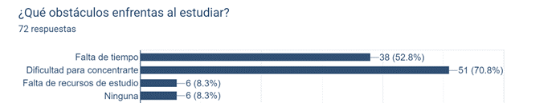

ESTUDIO DE MERCADO

Los resultados sugieren áreas de enfoque para desarrollar contenido y recursos educativos que aborden las dificultades específicas de los estudiantes no inscritos o egresados. Es evidente que las materias de Matemáticas, Física y Química representan puntos críticos de dificultad para estos estudiantes. Además, se identifica que existe una falta de acceso a información para el estudio, lo cual dificulta aún más el proceso de aprendizaje y la preparación académica de los estudiantes. Esta carencia de recursos educativos adecuados contribuye a aumentar los desafíos que enfrentan los jóvenes en su camino hacia el éxito académico.
Se puede observar que hay varios desafíos comunes que afectan su proceso de aprendizaje. La dificultad para concentrarse es el obstáculo más comúnmente mencionado. Esto sugiere que una gran mayoría de los estudiantes experimentan dificultades para mantenerse enfocados y atentos durante sus sesiones de estudio. Esta dificultad para concentrarse puede estar relacionada con la problemática previamente identificada sobre la falta de una cultura de hábitos de estudio y la exigencia académica del CECyT 9, lo que genera estrés y distracciones para los estudiantes. La falta de tiempo es otro obstáculo significativo. Esto indica que muchos estudiantes se enfrentan a restricciones de tiempo que dificultan su capacidad para dedicar el tiempo suficiente al estudio, lo que puede ser especialmente desafiante dada la exigencia académica del CECyT 9.